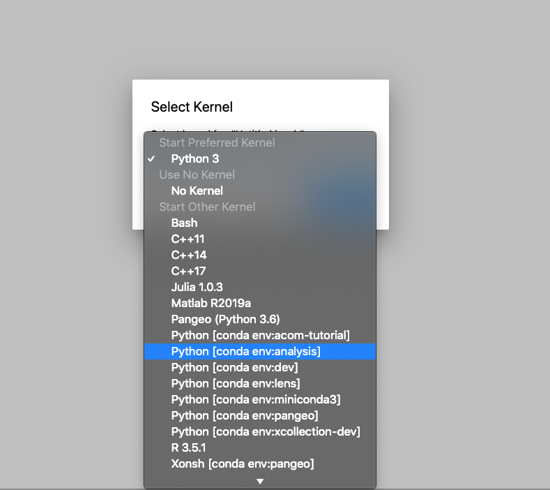
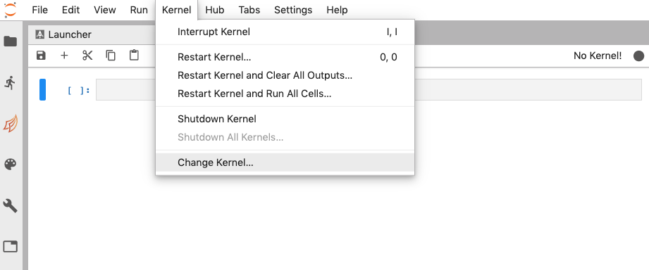
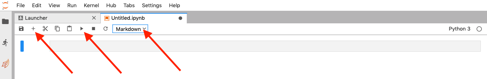
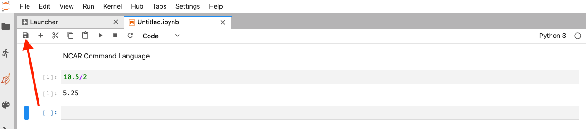
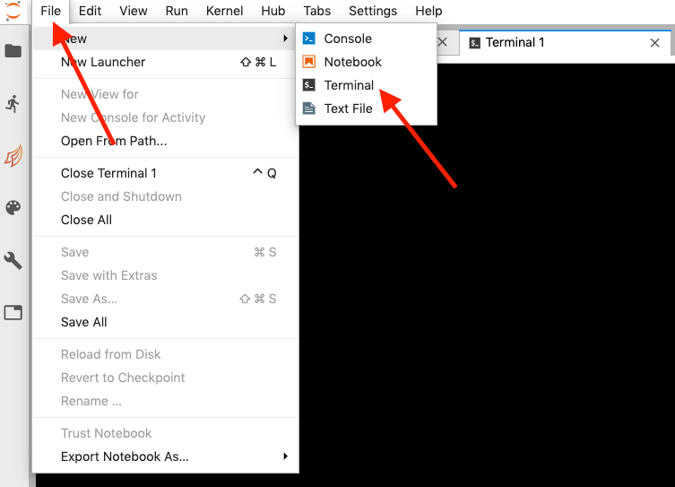

JupyterLab - Need to Know
Creating a Notebook
- To create a new notebook:
File ➤ New ➤ Notebook

Choosing a notebook kernel
- Once the new notebook is created, you will be prompted to choose a kernel. A notebook kernel is a computational engine that executes the code contained in a notebook.

- To select a computation engine (kernel), click on the drop down symbol

- To change the notebook kernel:
Kernel ➤ Change Kernel

Fundamentals
Now that you know how to create a jupyter notebook, let’s build up from the basics, what is a Jupyter Notebook?
The Jupyter Notebook is an incredibly powerful tool for interactively developing and presenting data analysis projects. A notebook integrates code and its output into a single document that combines visualisations, narrative text, mathematical equations, and other rich media. The intuitive workflow promotes iterative and rapid development, making notebooks an increasingly popular choice at the heart of contemporary data science, analysis, and increasingly science at large.
You can write like I am writing now (markdown cells) or you can perform calculations in Python, C++, R (code cells) and run them like this:
10 + 2
Writing
A type of cell in which you can write like this is called Markdown. Markdown is a very popular markup language. To specify that a cell is Markdown you need to click in the drop-down menu in the toolbar and select Markdown.
Click on the the ‘+’ button on the left and select Markdown from the toolbar.
Now you can type your first Markdown cell. Write NCAR Command Language and press play button.

You should see something like this:
NCAR Command Language
Now try making your first Code cell: follow the same steps as before but don’t change the cell type (when you add a cell its default type is Code). Type something like 10.5/2. You should see ‘5.25’ as output.
10.5/2
Modes
If you made a mistake in your Markdown cell and you have already ran it, you will notice that you cannot edit it just by clicking on it. This is because you are in Command Mode. Jupyter Notebooks have two distinct modes:
-
Edit Mode: Allows you to edit a cell’s content.
-
Command Mode: Allows you to edit the notebook as a whole and use keyboard shortcuts but not edit a cell’s content.
You can toggle between these two by either pressing ESC and Enter or clicking outside a cell or inside it (you need to double click if its a Markdown cell). You can always know which mode you’re on since the current cell has a green border if in Edit Mode and a blue border in Command Mode. Try it!
Other Important Considerations
- Your notebook is autosaved every 120 seconds. If you want to manually save it you can just press the save button on the upper left corner or press s in Command Mode.

- To know if your kernel is computing or not you can check the dot in your upper right corner. If the dot is full, it means that the kernel is working. If not, it is idle. You can place the mouse on it and see the state of the kernel be displayed.

- There are a couple of shortcuts you must know about which we use all the time (always in Command Mode). These are:
Shift+Enter: Runs the code or markdown on a cell
Up Arrow+Down Arrow: Toggle across cells
b: Create new cell
0+0: Reset Kernel
You can find more shortcuts in the Shortcuts section below.
- You may need to use a terminal in a Jupyter Notebook environment (for example to check status of running job). That is very easy to do, just press:
File ➤ New ➤ Terminal

That’s it. This is all you need to know to use Jupyter Notebooks. That said, we have more tips and tricks in next sections of this tutorial